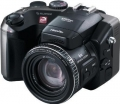

器材
党
全部器材
产品年表
名词百科
榜单
器材库
> 不可换镜头数码相机 > FinePix S602 Zoom

富士
FinePix S602 Zoom
4.25
综合评分
分类
不可换镜头数码相机
点评
0 条
图片
0 张
评测
0 篇
FinePix S602 Zoom 采用310万有效像素Super CCD和超级EBC富士龙6倍光学变焦镜头，搭载1.8英寸液晶显示屏。
产品类型
不可换镜头数码相机
综合评分
4.25分
无忌评测
暂无评测
规格参数
网友点评
(0)
产品图 / 样片
(0)
评测文章
(0)
规格总览
发布日期
2002-08-02
停产
是
影像规格
影像传感器
Super CCD
影像传感器尺寸
1/1.7英寸
总像素
330万
有效像素
310万
静态图像尺寸
2832×2128, 2048×1536, 1280×960, 640×480
静态图像格式
JPEG, TIFF-RGB
画幅比
4:3
短片尺寸
640×480@30fps, 320×240@30fps
短片格式
AVI
镜头和对焦
焦距
7.8mm-46.8mm
等效35mm画幅焦距
35mm-210mm
最大光圈
f/2.8-3.1
光学变焦
6.0倍
数码变焦
4.4倍/2.2倍/1.4倍
最近对焦距离
50cm, 微距10cm, 超微距1cm
曝光控制
测光模式
中央重点测光, 多分区评价测光, 点测光
曝光模式
P（程序自动曝光）, A（光圈优先自动曝光）, S（快门速度优先自动曝光）, M（手动测光曝光）
快门速度
自动：3 - 1/2000秒，手动：15 - 1/10000秒
曝光补偿
±2EV以1/3EV级调整
ISO感光度
160, 200, 400, 800, 1600
白平衡
白炽灯, 阴天, 自定义, 自动, 日光灯, 晴天
自拍
10秒, 2秒
连拍
5 fps
拍摄模式
自动、场景定位（肖像、运动、风景、夜景、黑白） P：程序自动、A：光圈优先自动、S：快门优先自动、M：手动
闪光灯
内置闪光灯
弹出式
闪光模式
自动, 慢速同步, 减轻/消除红眼, 强制闪光, 减轻红眼慢速同步
闪光涵盖范围
0.3-5.4m（广角），0.9-5.0m（长焦）
取景规格
取景器
电子取景器
取景器尺寸
0.44英寸
取景器像素
18万
LCD类型
低温多晶硅TFT LCD
LCD尺寸
1.8英寸
LCD像素
11万
文件输入/输出
存储卡
SM, Microdrive
数据接口
USB
视频/音频接口
AV 输出
支持打印协议
DPOF
电源
电池
4节AA号镍氢（Ni-MH）电池
外接电源
AC电源适配器AC-5VH/5VHS（选购）
外观
颜色
银色, 黑色
尺寸
121×81.5×97mm
重量
500g
其它
附件
6MB SmartMediaTM卡、背带、镜头盖、镜头盖固定环、 A/V电缆、USB电缆、CD-ROM
软件
USB驱动程序、FinePixViever、DP Editor、Apple QuickTime5.0、ViedoImpression,Windows系统用Adobe PhotoDelux@HE4.0版
该产品暂无存档的网友点评
该产品暂无存档的产品图
评测 / 相关文章
该产品暂无存档的评测文章